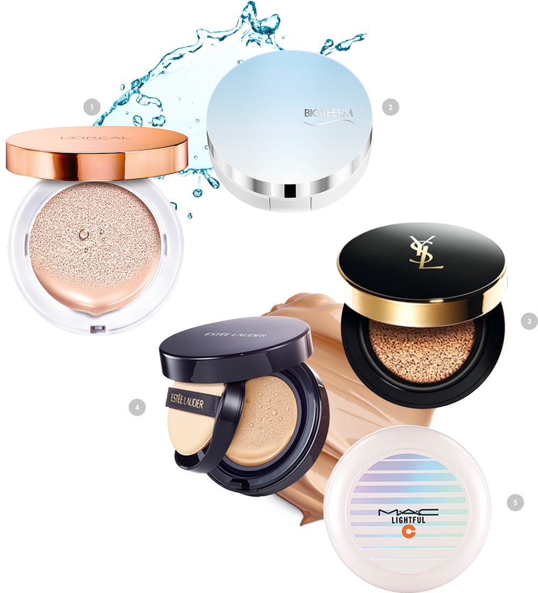

Spring 2016, the beauty market has become the battleground for cushion compacts. This is because various foreign cosmetic brands released cushion compacts this year, starting with MAC’s Lightful C Quick Finish compact and followed by Yves Saint Laurent, Lancôme, Estée Lauder, Loréal Paris, Shu Uemura, Bobbi Brown and Biotherm. Korea’s cushion compacts lead the K-beauty craze, and have now been recognized by foreign brands as a must-have makeup item for women all over the world. The arrival of new cushion compacts has also caught the attention of Asians, who prefer light skin tones and clear skin appearances! This Spring’s makeup trend is ‘strobing makeup’, which uses highlights to make your facial features look more pronounced. To go with this trend, newly-released foreign cushion compacts vow to help moisturize and soften your skin. Armed with their own secret weapons, foreign brands have now declared war. Estée Lauder boasts that their compact gives the effect of a liquid foundation and finish powder combination, while Biotherm’s product has a cooling effect. Lancôme has upgraded from their rose cushion to a double-netted cushion, which features higher absorption and coverage, while MAC has added minerals and vitamins to their compact to create a product with such high coverage and adhesiveness that it’s being called the ‘selfie cushion’. Shu Uemura’s compact comes in a limited edition Bear Brick packaging with a brush pump that can even touch up the fine hairs on your face. The brand states that brushing on the foundation is better than applying foundation with a cushion puff, which can cause clumping.
"To go with the 'strobing makeup' trend,
"
newly-released foreign cushion compacts vow to help moisturize and soften your skin.
Say you’re looking for a moisture-intensive product? We recommend ’Loréal Paris Lucent Magic Cushion Lumière’ or ‘Biotherm Aquasource Moisture Plumping Cushion’. Say you want a product with great coverage that lasts long? We recommend ‘Estée Lauder Double Wear Cushion BB All-Day Wear Liquid Compact’, ‘Yves Saint Laurent Le Cushion Encre de Peau’ or ‘MAC Lightful C Quick Finish Compact’. Of course, most cushion compacts don’t focus on a single function. Most of them have listened to their consumers and boast moisturizing, coverage and softening qualities. Domestic cushion compact brands, which have already been recognized for their quality, are now teaming up with famous makeup artists to add new features to their products. Now, what will your choice be?